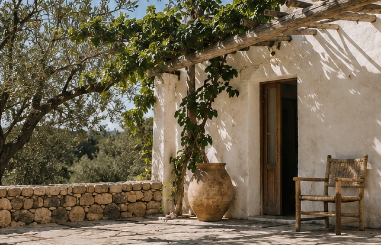
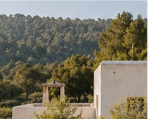
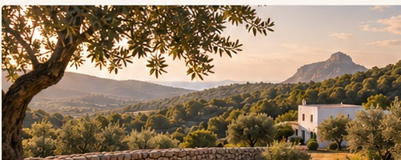

A different side of IbizaThe
The
Countryside
Awaits.
A considered collection of rural stays, local experiences and stories from the island.
Explore the collection ↗
Places worth staying
View the collection ↗Curated rural stays

Es Fornès

Can Lluc

Our commitmentEvery stay gives
Every stay gives
something back.
We believe in travel that sustains the places we love. A contribution from every booking supports IbizaPreservation and its work protecting the island's landscapes and communities.
Our approach ↗Explore by map
Explore the island ↗Find your own Ibiza
Rural stays, quiet corners, thoughtful experiences.
Follow the winding roads inland and discover a slower, more soulful side of the island.
STAYS / EXPERIENCES / NATURE